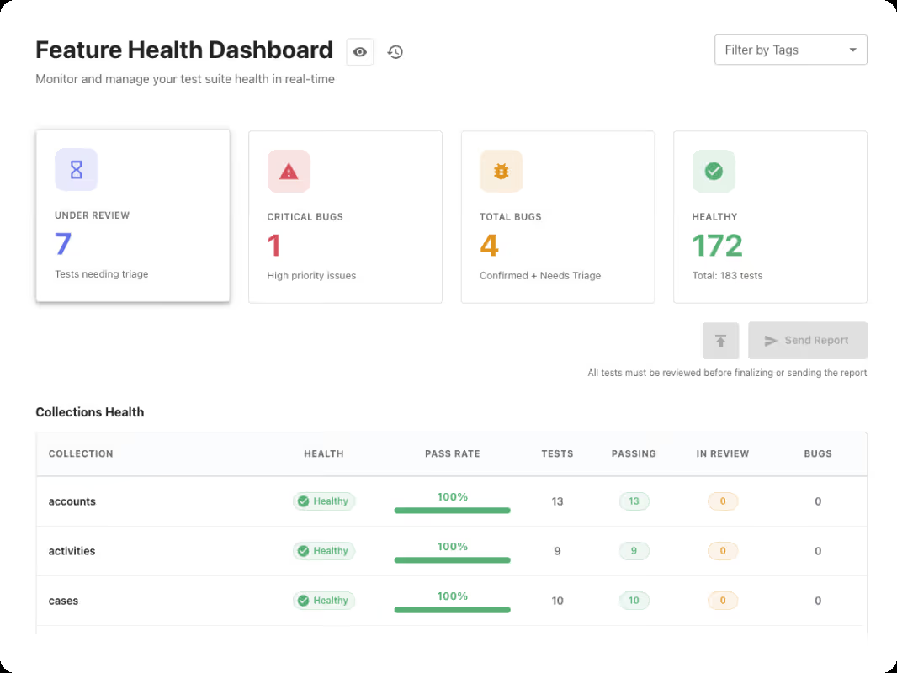
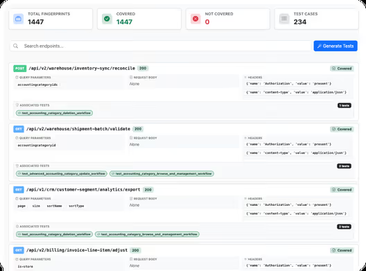

Checksum — 機能・導線・画面
確認日：2026年10月27日。全体比較・画面／動画ギャラリー
調査範囲
E2E・APIのcoverageとCIを扱うContinuous Quality Agent。公開記事の4つのデモを起点に機能を整理。
比較上の位置：探索・PR・保守の直接比較。追加理由：検出→生成→失敗の切分け→修復PRまでを明示し、継続QAの責任範囲が広いため。
公式UI画像と公開デモの説明。動画内の件数・修復率は提供者の例で、当調査の結果ではない。APIの概念アニメーションは操作動画として除外。
作業の流れ
coverage検出 → ケース案 → Playwright生成 → repoへPR → 実行 → triage／recovered → 修復PRをreview → CIで再確認
機能の構成
Platform、Feature Health Dashboard、E2E Agent、API Agent、coverage検出、生成、healing、CIへの結果。
下表は公開説明・文書の要約。実操作した範囲は画面一覧と調査範囲に限定し、表全体を実機検証済みとはしない。
| 段階 | 画面・機能 | 入力・操作と次の行動 |
|---|---|---|
| 範囲 | Detect Test Cases | featureやfolderを起点に不足ケースを検出する公開デモ。 |
| 設計 | Case提案 | 準備・cleanup・手順を含むケース案をrepoのPRに残す説明。 |
| 生成 | Generate | 選択した内容を標準Playwrightへ変換してPRを作る。 |
| 実行 | CI・PR・deployment | 変更やデプロイに合わせ実行し、既存の開発工程に結果を返す。 |
| 診断 | Triage・Recovered | 失敗原因の分析・復旧状態と、コードへの修復を別段階として説明。 |
| 修復 | Healing PR | 更新したテストを別PRに出し、人が差分を確認する。 |
| API | API Agent | endpointや連続する呼出しを検証する説明と画面例。 |
| 運用 | Feature Health | coverage・テストの健康状態をまとめ、変更後も継続する。 |
人の担当と比較上の着眼点
生成・修復PR、仕様上の正解、実際の不具合かどうかを確認する。
調査者の解釈：修復したという状態だけでなく、原因説明・修復コード・承認・再実行まで追う必要がある。 製品性能の優劣を実証した結論ではない。
動画と見る場面
製品操作を確認できる動画を今回保存できていない。存在しない・非対応という意味ではない。問い合わせ画面で代用しない。
画面一覧
| 画面 | 種別 | 出典 |
|---|---|---|
 Feature Health：機能別の検証状態 |
official-ui-image | 掲載元 |
 API Agent：endpointと結果の一覧 |
official-ui-image | 掲載元 |